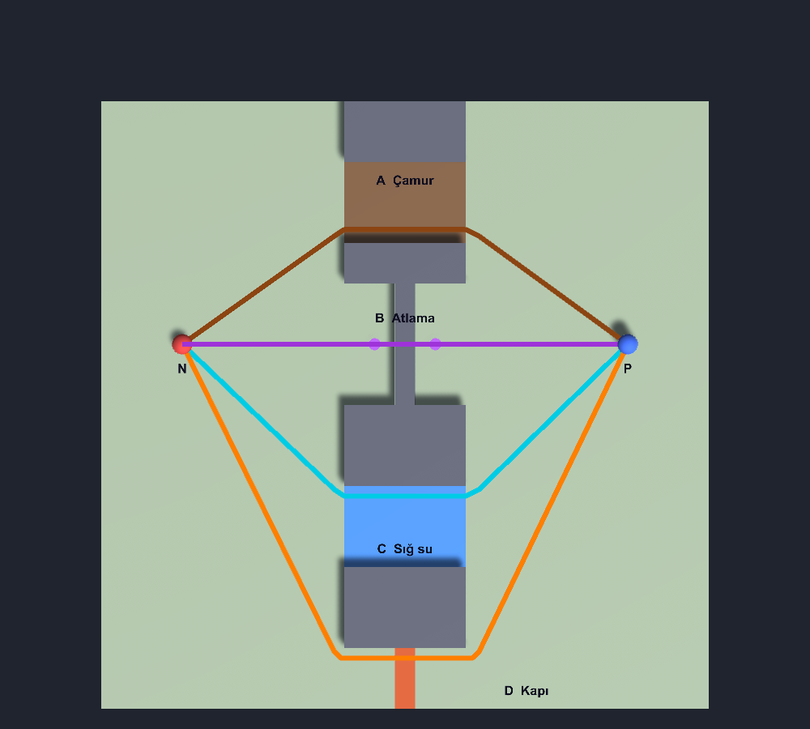
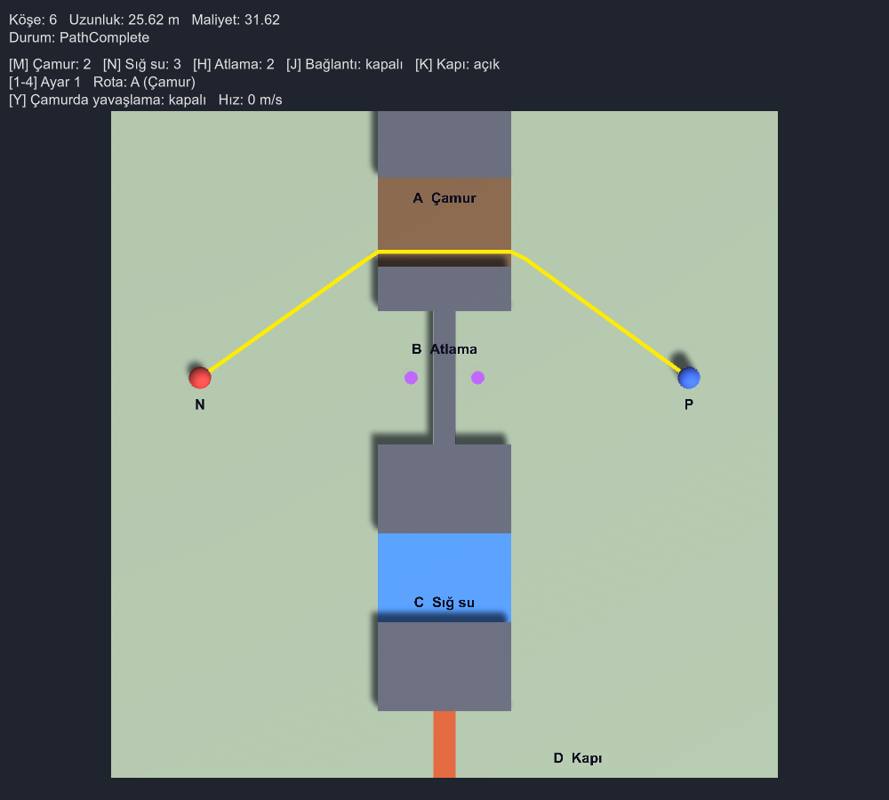
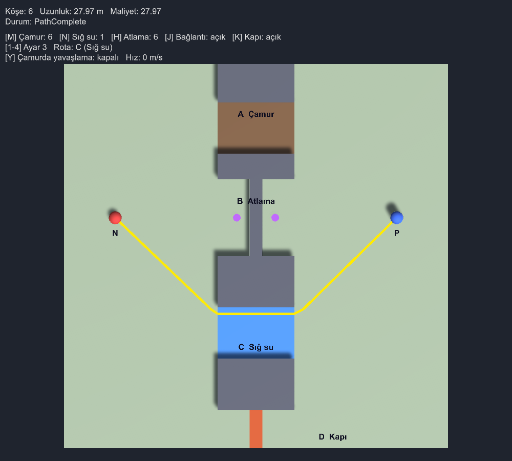
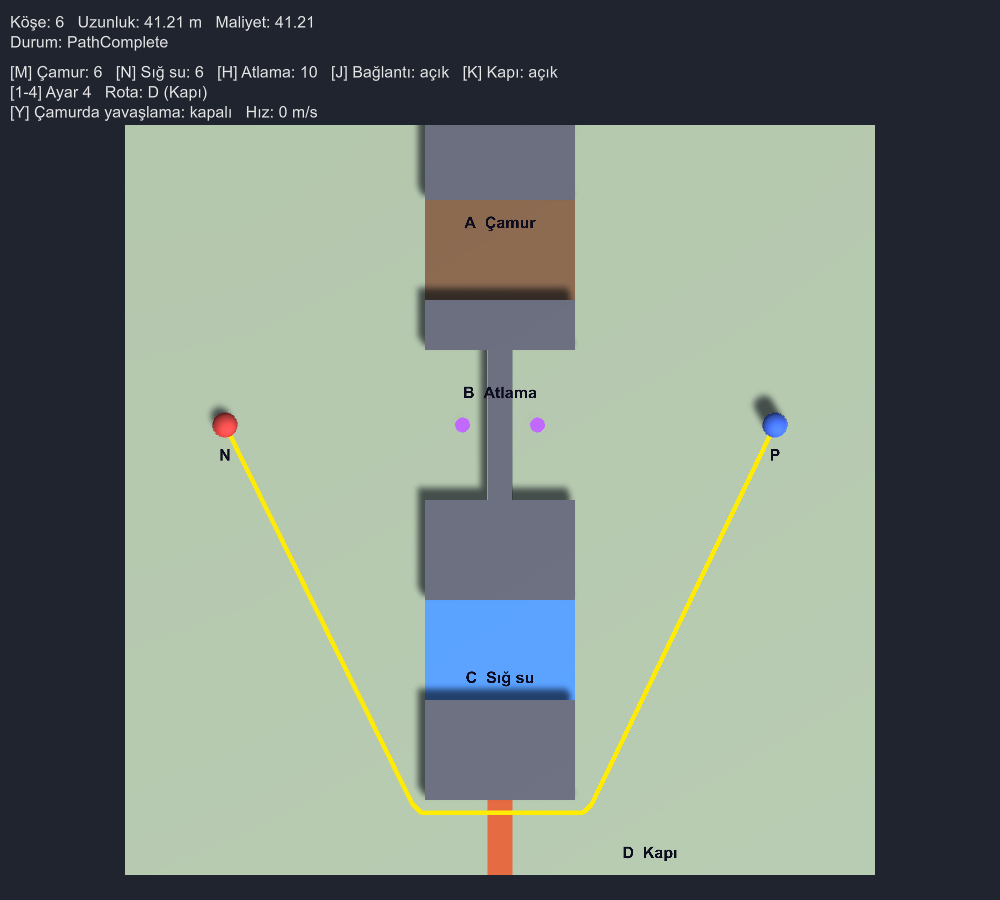

Derste kurduğumuz U yerine sahneyi ikiye bölen bir engel hattı tasarladım (x = 12–18, yükseklik 1 m). NPC sol avluda N = (4; 18), karakter sağ avluda P = (26; 18). Engelden geçmenin dört yolu var:
NavMeshModifierVolume ile Camur alanı (User 3).NavMeshLink: (13,5; 18) ⇝ (16,5; 18), alan Jump, çift yönlü. NPC bağlantıyı JumpLinkTraverser ile parabol çizerek (h = 1,5 m) geçiyor.NavMeshModifierVolume ile SigSu alanı (User 4).SlidingDoor + Carve açık NavMeshObstacle (Carve Only Stationary, 0,5 s) var; K ile kapanınca ağı oyuyor. Özel alan yok, ama en uzun yol.Duvar blokları NavMeshModifier ile Not Walkable (üstleri pişirilmiyor), kapı Remove object modunda. Beş ders betiği (NpcNavChase, PathDebugDraw, SlidingDoor, JumpLinkTraverser, AreaCostToggle) NPC'de; AreaCostToggle'a Sığ su (N), Atlama (H) ve rapordaki ayarlar için 1–4 tuşları eklendi.
Ajan yarıçapı 0,5 m olduğu için engelleri 0,5 m şişirilmiş düşündüm; köşe noktaları şişirilmiş köşelerdir. Örneğin A: N'den (11,5; 23,5) köşesine √(7,5² + 5,5²) = 9,30 m, koridor boyunca 7 m, sonra P'ye yine 9,30 m: toplam 25,60 m; bunun 6 m'si çamurda (x = 12–18). Hesapta Unity'nin ölçtüğü uzunlukları kullandım (NavMesh.CalculatePath + PathDebugDraw'daki alan örneklemesi). Çamur maliyeti m, sığ su s, Jump j; g = Σ Li · ci:
| Rota | Köşe noktaları (elle) | Elle uzunluk | Unity uzunluğu | Özel parça | Maliyet g |
|---|---|---|---|---|---|
| A | N → (11,5; 23,5) → (18,5; 23,5) → P | 9,30 + 7 + 9,30 = 25,60 | 25,62 | 6,00 m çamur | gA = 19,62 + 6m |
| B | N → (13,5; 18) ⇝ (16,5; 18) → P | 9,50 + 3 + 9,50 = 22,00 | 22,00 | 3,00 m bağlantı | gB = 19,00 + 3j |
| C | N → (11,5; 10,5) → (18,5; 10,5) → P | 10,61 + 7 + 10,61 = 28,21 | 27,97 | 6,00 m sığ su | gC = 21,97 + 6s |
| D | N → (11,5; 2,5) → (18,5; 2,5) → P | 17,22 + 7 + 17,22 = 41,44 | 41,21 | yok (kapı açık) | gD = 41,21 |
C ve D'de Unity 0,24 m daha kısa: aşındırma köşeyi dik değil pahlı keser, Unity'nin köşesi (11,5; 10,83) → (12; 10,5) olur; ip köşeyi biraz daha kısa yoldan döner. A'da ise Unity'nin çizgisi koridorda z = 23,5 yerine 23,67'den geçiyor: voksel boyutu 0,167 m olduğu için aşındırma o kenarda 0,67 m'ye yuvarlanıyor. Pahlama yolu kısaltıyor, yuvarlama uzatıyor; sonuçta fark +0,02 m.

Bu testleri, sahneyi bir oyun derlemesinde otomatik çalıştırarak yaptım (ilk iki testte NPC hızı 0).
Her ayarda NPC'nin hızı 0 yapıldı (laboratuvardaki gibi), böylece ekrandaki sayılar yolun tamamını gösteriyor. Rota, sarı çizgiden ve panelin “Rota” satırından okundu. Dördüncü ayarı güvenli yolu (D) da göstermek için ekledim.
| Ayar | Çamur m | Sığ su s | Jump j | g(A) | g(B) | g(C) | g(D) | Tahmin | Unity'nin seçtiği | Ekrandaki uzunluk | Ekrandaki maliyet |
|---|---|---|---|---|---|---|---|---|---|---|---|
| 1 | 2 | 3 | 2 | 31,62 | 25,00 | 39,97 | 41,21 | B | B (atlama) | 22,00 m | 25,00 |
| 2 | 2 | 3 | 6 | 31,62 | 37,00 | 39,97 | 41,21 | A | A (çamur) | 25,62 m | 31,62 |
| 3 | 6 | 1 | 6 | 55,62 | 37,00 | 27,97 | 41,21 | C | C (sığ su) | 27,97 m | 27,97 |
| 4 | 6 | 6 | 10 | 55,62 | 49,00 | 57,97 | 41,21 | D | D (kapı) | 41,21 m | 41,21 |


Ekran görüntülerinin sol üstünde PathDebugDraw ve AreaCostToggle panelleri var (köşe sayısı, uzunluk, maliyet, durum, ayar, rota). Dört ayarda da Unity'nin seçimi tahminle aynı; ekrandaki maliyet tahmin edilen g ile birebir tuttu.
Ayar 1 → Ayar 2 arasında yalnızca Jump maliyeti değişti (2 → 6) ve rota B → A oldu. Çamur 2 iken gA = 19,62 + 6 · 2 = 31,62. B'nin A'dan pahalı olması için 19,00 + 3j > 31,62, yani j > 4,21 gerekir. Unity'de Jump maliyetini 1'den 15'e 0,05 adımla taradım: 4,30'da hâlâ B, 4,35'te A. Eşik elle hesapla 0,1–0,15 içinde tuttu.
Aynı yolla Ayar 3'te C, 21,97 + 6s < 37,00 olduğu sürece, yani s < 2,51 iken seçilir (Unity: 2,50 → 2,55 arasında B'ye geçti). Ayar 4'te ise fark büyük. Elle hesaba göre D, 19 + 3j > 41,21 olunca, yani j > 7,40 iken seçilmeli; Unity ise j = 8,65'e kadar B'de kaldı, D'ye ancak 8,70'te geçti. Sebebi 5.2'deki not: Unity A*'ı çokgenler üzerinde yapıyor ve maliyeti çokgen kenarlarının orta noktaları arasından ölçüyor. D'nin geçtiği alt avlu 11 m'lik uzun üçgenlerden oluşuyor, orta noktalar gerçek yoldan uzak düşüyor. Bu yüzden Unity D'yi gerçekte olduğundan pahalı görüyor: geçiş anında 19 + 3 · 8,7 = 45,1, yani gerçek 41,21'den yaklaşık 3,9 birim (%9) fazla. Kısa koridorlu A, B ve C'de bu hata çok küçük.
Bence Ayar 1. NPC alçak duvarı görür görmez üstünden atlıyor ve karaktere 5,64 s'de ulaşıyor. Gerçek koşularda bu en hızlı rota: C 7,98 s, A 7,30 s (çamurda yavaşlarsa 8,96 s), D 11,95 s. Oyuncunun kendisinin de seçeceği bu kestirme NPC'yi kararlı ve çevik gösterir. Burada önemli olan, maliyetlerin gerçek yavaşlamayla tutarlı olması. Çamurda hız yarıya iniyorsa çamurun gerçek bedeli 2'dir, NPC'nin “en ucuz” bulduğu yol gerçekten en hızlı yol olur. Ayar 4 ise en aptal görünenidir: oyuncu üç kısa yolu açıkça görürken NPC 12 saniyelik dolambaca girer. Hikâyede bir gerekçe yoksa (ağır zırhlı, yüzemeyen ya da atlayamayan bir muhafız) bu davranış korkaklık ya da hata gibi algılanır. Ayar 2 ve 3 ise farklı NPC tiplerine verilirse (agent.SetAreaCost ajana özel) dünyayı canlı gösterir.
MudSlowdown.cs her karede NavMesh.SamplePosition ile ajanın altındaki alanı buluyor (PathDebugDraw'daki AreaIndex). Alan Camur ise agent.speed değerini yarıya indiriyor, çıkınca eski hızına döndürüyor (Y tuşu açar/kapatır). Ölçüm Ayar 2'de (rota A, 6 m çamur, hız 3,5 m/s) yapıldı. Karakter sabit duruyor; NPC'nin merkezi karaktere 1 m'den yakın olunca “ulaştı” sayıldı. Her koşul iki kez koşuldu ve iki koşu da aynı sonucu verdi:
| Koşul | Seçilen rota | Yol maliyeti | Çamurda geçen süre | Karaktere ulaşma süresi |
|---|---|---|---|---|
| Yavaşlama kapalı | A | 31,62 | 1,74 s | 7,30 s |
| Yavaşlama açık (hız × 0,5) | A | 31,62 | 3,33 s | 8,96 s (+1,66 s, %23) |
Beklenen fark 6 / 1,75 − 6 / 3,5 = 1,71 s idi; ölçülen fark 1,66 s. Rota ve yol maliyeti değişmedi, çünkü maliyet yalnızca yol bulucuyu etkiliyor. Yavaşlama ise yalnızca süreyi uzattı.
Kanıt dosyaları: rapor/kanit/editor-rota-hesabi.txt (CalculatePath + SetAreaCost ölçümleri ve taramalar), rapor/kanit/oyun-olcumleri.txt (oyun içi ekran değerleri, kapı/bağlantı testleri, süreler). Görüntüler: screenshots/.